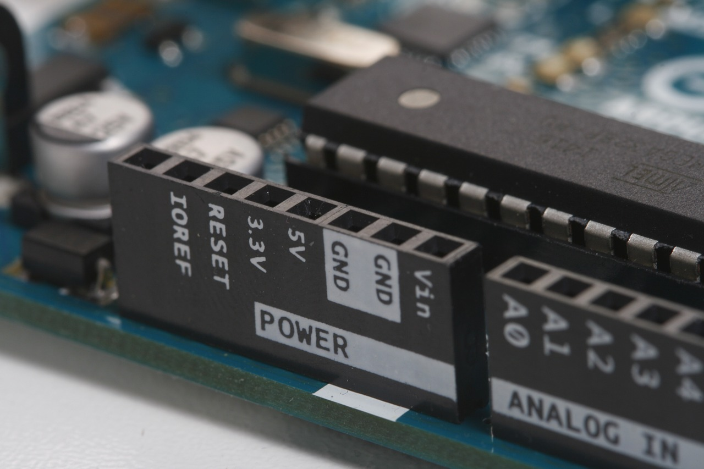

Arduino in the Classroom
This past fall I took on an adventure I wasn’t sure either I or my kids would be ready for. I started a club for electronics and programming using an Arduino in middle school. If you’re not familiar an Arduino is a micro-controller with a programmable board and a variety of inputs and outputs. The challenge with an Arduino is that it doesn’t have a traditional operating system of any form, and relies completely upon the tinkerer to prototype and get everything set up appropriately. You have to know about voltages and I/O pins, and even a bit of programming to get one set up the right way. This is challenging for adults, much less middle school students.
As a club, we would only meet 1x each week for an hour after school during 10 sessions, which is not a lot to get familiar with the intricacies of the C++ programming language and electronics. We started by using Makey Makey’s which are a lite version of an arduino, you can still program them, but they are designed to be easy to use, plug and play. I would highly recommend them to get familiar with the fundamentals of electronics and microcontrollers. From there we used an online interface called Tinkercad, which has an electronics hub where you can prototype Arduino board layouts, and program them in an online environment. This hub made the club possible and allowed my kids to see their boards and work with them before putting them into action, and possible making a mistake that could burn out the board.
By the end of the club each group of students had made a “zombie-detection” system with a motion sensor, and alarm system that would light up if a tripwire was crossed. If you don’t have any knowledge about programming or microcontrollers I would encourage you to check out a makey makey and start there, and work up to an Arduino or more advanced board, and definitely check out Tinkercad as a resource, it is invaluable and has many tutorials and help videos to get started. What is also cool about them is they have a 3D design and modeling program online, where you can design a variety of items for 3D printing, or even minecraft. As always, if you have any questions about how this works, or how you could get this going please don’t hesitate to reach out and contact me using the form on this site. Happy Coding!